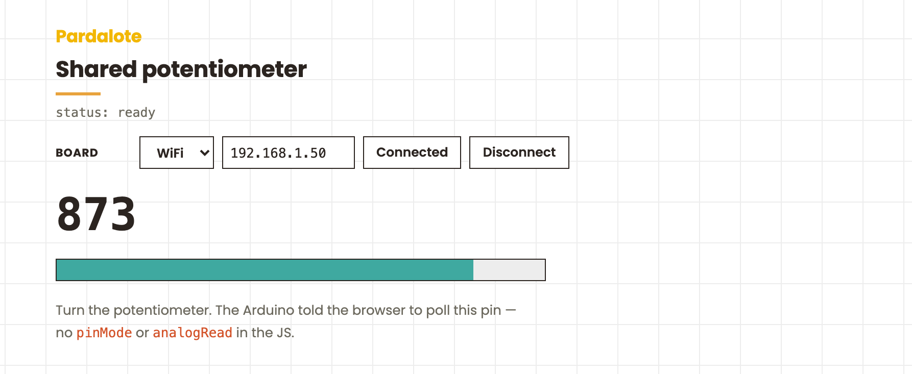

The Arduino announces its own analog input and the browser listens — a turn of the knob shows up live on screen with no JS setup.

The Arduino tells the browser "I have an analog input on A0 — start polling it." The browser does nothing more than listen. A turn of the knob shows up live on screen.
#include <Pardalote.h>
const int POT = A0; // e.g. A0 for UNO R4, GPIO 36 (ADC1) for ESP32
void setup() {
Pardalote.begin();
pinMode(POT, INPUT);
// Tell the browser "A0 is an analog input."
// The JS side responds by auto-starting a poll at its default
// interval (200 ms) — no pinMode/analogRead in the browser code.
Pardalote.share(POT, ANALOG_INPUT_MODE);
}
void loop() {
Pardalote.run();
// Nothing else needed — the browser's poll requests are handled
// by Pardalote.run() above, which also fires the analogRead and
// broadcasts the result.
}
const POT = 'A0'; // shared input — matches the Arduino sketch
const arduino = new Arduino();
setupConnection(arduino, { store: 'pardalote-shared-potentiometer' });
// Pin handles resolve alias strings like 'A0' lazily, so this listener can be
// registered right away — it starts firing once the board's alias table
// arrives with the connection handshake.
arduino.pin(POT).on('change', ({ value }) => {
document.getElementById('value').textContent = value;
const pct = (value / arduino.analogMax) * 100;
document.getElementById('bar').style.width = pct + '%';
});
The companion to shared-light-switch. That one showed the Arduino pushing values to the browser; this one shows the Arduino announcing a pin so the browser auto-starts polling — without any pinMode or analogRead call on the JS side.
The minimal Arduino sketch:
void setup() {
Pardalote.begin();
pinMode(POT, INPUT);
Pardalote.share(POT, ANALOG_INPUT_MODE); // ← tells the browser
}
void loop() {
Pardalote.run();
// nothing else — the browser polls, Pardalote.run() handles it
}
The minimal browser sketch:
arduino.pin('A0').on('change', ({ value }) => updateDisplay(value));
No arduino.pinMode, no arduino.analogRead. The polling pipeline is set up automatically when the Arduino's share(A0, ANALOG_INPUT_MODE) arrives.
Wire it as a voltage divider:
| Pot pin | Connect to |
|---|---|
| Outer 1 | 3.3 V |
| Wiper (centre) | A0 |
| Outer 2 | GND |
index.html and press Connect — enter the IP (or switch to USB). No code editing needed; the setting is remembered per browser.Arduino: Pardalote.share(A0, ANALOG_INPUT_MODE)
→ CMD_PIN_MODE A0 = ANALOG_INPUT_MODE
Browser receives CMD_PIN_MODE:
→ starts a default-interval (200 ms) analogRead poll
→ CMD_ANALOG_READ A0 [interval=200]
Arduino registers the periodic action; every 200 ms:
→ reads A0, broadcasts CMD_ANALOG_READ A0 = <value>
Browser receives CMD_ANALOG_READ:
→ updates cache, fires arduino.pin('A0').on('change', …)
→ display updates
The JS code on the page is just the pin handle's 'change' listener. The rest of the pipeline was set up by the Arduino's one-line call to share().
In a project where the Arduino sketch is the source of truth about which pins are wired to what (and the browser is just a viewer), share() lets the Arduino describe its hardware setup to the browser, instead of every browser sketch having to repeat the wiring knowledge.
Polling rate is 200 ms here (the browser's default). If you want different rates, the browser can override after connect with arduino.analogRead('A0', 50) — that just updates the interval; no need to re-declare the mode.